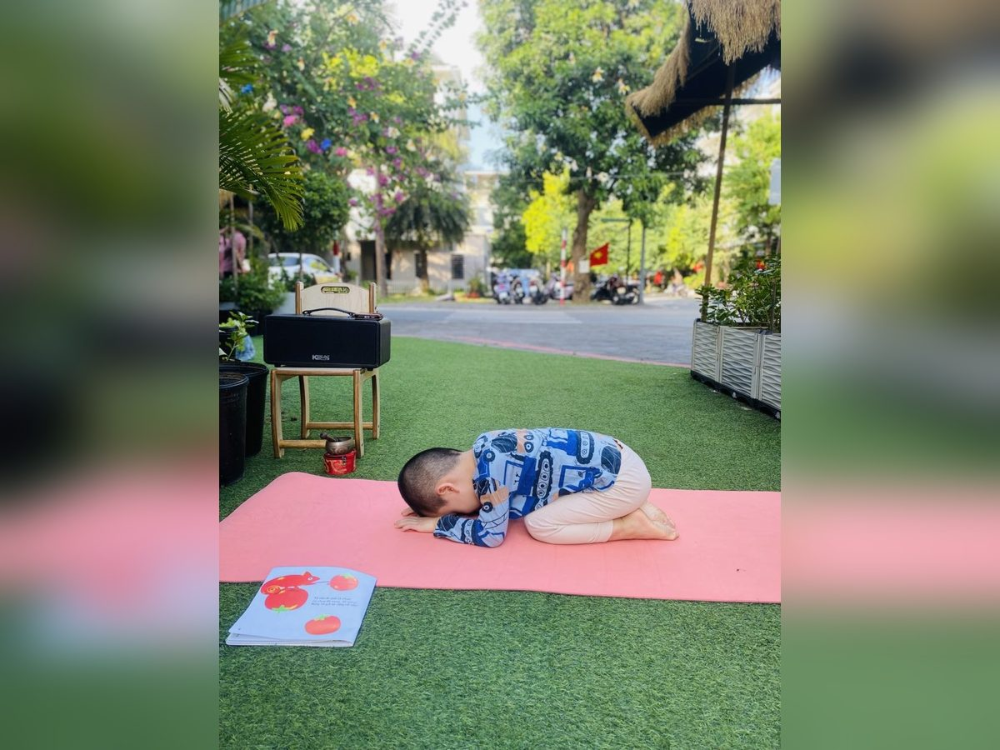
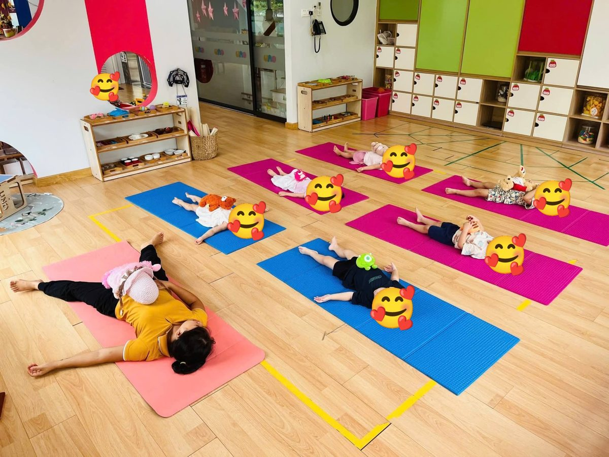
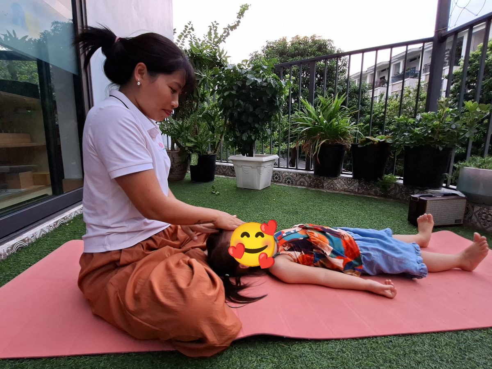

Yoga trẻ em · Chánh niệm
Bé khó ngủ, hay thức giấc: yoga nhẹ, hơi thở và nghi thức trước giờ ngủ

Chín giờ tối. Đèn đã tắt. Con vẫn lăn qua lăn lại, hỏi thêm một câu, đòi thêm cốc nước, rồi lại gọi mẹ.
Cảnh này chắc nhiều nhà quen lắm. Ở trường mầm non cũng vậy. Giờ ngủ trưa, cả lớp nằm xuống, vẫn có vài đôi mắt mở thao láo nhìn trần nhà.
Bài này Sophia chia sẻ những gì bố mẹ và thầy cô có thể làm để giúp con dịu xuống: vài tư thế yoga thật nhẹ, hơi thở, massage, và một nghi thức nhỏ lặp lại mỗi tối. Không có phép màu nào làm con ngủ ngay. Cô nói thật vậy. Nhưng cơ thể trẻ con học nhanh lắm. Lặp lại đủ lâu, con sẽ tự hiểu: à, đến lúc nghỉ rồi.
- Con cần ngủ bao lâu
- Vì sao con khó ngủ
- Ngủ ngon từ ban ngày
- Nghi thức 20 phút
- 6 tư thế
- Hơi thở
- Massage
- Khi con thức giữa đêm
- Cho cô giáo mầm non
- Khi nào đi khám
Con cần ngủ bao lâu?
Trước khi lo con ngủ ít, mình xem con thật sự cần bao nhiêu. Viện Hàn lâm Y học Giấc ngủ Hoa Kỳ khuyến nghị số giờ ngủ trong một ngày, tính cả giấc trưa:
| Tuổi | Giờ ngủ mỗi ngày |
|---|---|
| 1 đến 2 tuổi | 11 đến 14 giờ |
| 3 đến 5 tuổi | 10 đến 13 giờ |
| 6 đến 12 tuổi | 9 đến 12 giờ |
| 13 đến 18 tuổi | 8 đến 10 giờ |
Đó là một khoảng, không phải con số cứng. Có bạn ngủ ít hơn một chút mà sáng dậy vẫn tươi tỉnh, chơi vui, ăn ngon. Vậy là ổn. Điều đáng để ý hơn là ban ngày: con có hay cáu, hay khóc vô cớ, lờ đờ, hay ngược lại, “quá đà” không dừng được. Trẻ thiếu ngủ nhiều khi không ngáp. Con quậy.
Vì sao con khó ngủ, hay thức giấc?
Thường không phải một lý do. Mà là vài điều nhỏ cộng lại.
Thân chưa mệt đủ
Cả ngày ngồi trong nhà, ít chạy nhảy, ít ra nắng. Cơ thể chưa “tiêu” hết năng lượng.
Đầu óc còn chạy
Màn hình, hoạt hình dồn dập, trò chơi đuổi bắt ngay trước giờ ngủ. Mắt nhắm rồi mà trong đầu vẫn sáng đèn.
Cảm xúc chưa gỡ
Một ngày bị mắng, xa mẹ, có em mới, đổi lớp, sợ bóng tối. Nằm xuống, im lặng, những điều đó mới trồi lên.
Giờ giấc lệch
Hôm ngủ sớm, hôm ngủ muộn. Cuối tuần thức khuya. Ngủ trưa quá dài hoặc quá muộn trong chiều.
Bụng chưa yên
Ăn tối quá no, sát giờ ngủ. Đồ ngọt, trà sữa, nước ngọt có ga, trà, sô cô la buổi tối.
Cơ thể khó chịu
Ngạt mũi, ngứa, đau bụng, phòng quá nóng hoặc quá lạnh, chăn quá dày.
Trẻ em nhạy với ánh sáng buổi tối hơn người lớn. Một nghiên cứu ở Nhật cho thấy cùng một mức ánh sáng ban đêm, lượng melatonin (hormone báo hiệu buồn ngủ) của trẻ bị giảm nhiều hơn hẳn so với bố mẹ các bé (Higuchi và cộng sự, Journal of Clinical Endocrinology & Metabolism, 2014). Một tổng quan khác gom nhiều chục nghiên cứu về trẻ em tuổi đi học và thấy dùng màn hình nhiều đi cùng giờ ngủ muộn hơn và thời gian ngủ ngắn hơn (Hale và Guan, Sleep Medicine Reviews, 2015).
Ngủ ngon bắt đầu từ ban ngày
Sophia nhìn giấc ngủ của con như kết quả của cả một ngày, chứ không phải của mười phút cuối. Một bài tập trước giờ ngủ giúp được. Nhưng nếu cả ngày con ở trong nhà, ăn ngọt, xem màn hình đến sát giờ ngủ, thì tư thế nào cũng khó làm thay phần còn lại.
Trong yoga, con người không chỉ có cơ thể. Còn hơi thở, cảm xúc, suy nghĩ, và một phần sâu hơn mà cô gọi là cảm giác bình an bên trong (cô có viết kỹ hơn trong bài Năm thể của con người). Với trẻ con, năm điều ấy giản dị lắm:
Thân
Chạy nhảy, leo trèo, ra nắng buổi sáng. Ăn tối sớm, nhẹ bụng.
Hơi thở
Vài phút thở chậm cùng bố mẹ. Thở ra dài hơn hít vào.
Cảm xúc
Được ôm, được nghe con kể chuyện trong ngày, kể cả chuyện buồn.
Suy nghĩ
Bớt kích thích buổi tối: tắt màn hình, nhà nhỏ tiếng, đèn dịu.
Bình an
Cảm giác an toàn: có người thương ở gần, mọi thứ quen thuộc, mai lại có mẹ.
Mấy điều cô hay gợi ý cho ban ngày: cho con ra ngoài trời ít nhất một lúc, nhất là buổi sáng. Chơi vận động thật sự, chạy, nhảy dây, đạp xe. Giấc trưa vừa phải và xong trước khoảng ba giờ chiều với bé lớn. Ăn tối trước giờ ngủ chừng hai tiếng. Và giờ đi ngủ, giờ thức dậy gần giống nhau mỗi ngày, kể cả thứ bảy, chủ nhật.
Nghe thì đơn giản. Làm đều mới khó. Không cần làm hết một lúc đâu. Chọn hai điều dễ nhất, giữ một tuần, rồi thêm.
Nghi thức 20 phút trước giờ ngủ
Trẻ con thích những gì lặp lại. Cùng một bài hát, cùng một câu chuyện, cùng một câu chúc. Lặp lại khiến con thấy an toàn, và cơ thể dần học được tín hiệu: chuỗi việc này xong là ngủ.
Đây là một nghi thức Sophia hay gợi ý. Bố mẹ sửa lại cho hợp nhà mình. Quan trọng là giữ thứ tự gần như nhau mỗi tối.
- 1 tiếng trước giờ ngủTắt tivi, cất điện thoại, máy tính bảng. Tắt bớt đèn trắng, bật đèn vàng. Cả nhà nói nhỏ lại.
- Tắm nước ấm, đánh răng, đi vệ sinhMấy việc “bắt buộc” làm trước, để lúc lên giường không phải dậy nữa.
- 5 đến 7 phút yoga nhẹSáu tư thế bên dưới, ngay trên giường. Chậm thôi, như đang chơi.
- 3 phút thởNgửi hoa, thổi nến. Hoặc ru gấu ngủ trên bụng.
- 5 phút massageXoa lưng, xoa bàn chân, vuốt nhẹ trán. Con nằm, bố mẹ ngồi bên.
- Một câu chuyện ngắn, hoặc “ba điều vui hôm nay”Con kể, bố mẹ nghe. Chuyện buồn cũng được kể. Nói ra rồi, con nhẹ hơn.
- Câu chúc ngủ ngon, tắt đènMột câu quen thuộc, mỗi tối như nhau. “Mẹ thương con. Con ngủ ngon nhé. Sáng mai mẹ ở đây.”
Một khảo sát trên hơn mười nghìn bà mẹ ở 14 quốc gia thấy trẻ có nề nếp trước giờ ngủ đều đặn thì đi ngủ sớm hơn, mất ít thời gian hơn để chìm vào giấc ngủ, ít thức giấc ban đêm hơn và ngủ dài hơn. Nề nếp càng đều, hiệu quả càng rõ (Mindell và cộng sự, Sleep, 2015). Đây là nghiên cứu quan sát, nên cô hiểu là: nề nếp đi cùng giấc ngủ tốt hơn, chứ không phải bảo đảm cho từng bé.
6 tư thế yoga nhẹ cho bé trước giờ ngủ
Buổi tối không phải lúc tập cho dẻo, cho khỏe. Buổi tối là lúc làm chậm. Mỗi tư thế giữ khoảng năm hơi thở, hoặc lâu hơn nếu con thích. Bố mẹ tập cùng con thì càng tốt. Con nhìn bố mẹ thở chậm, con cũng chậm theo.
Ảnh thật từ các lớp Yoga trẻ em của cô Sophia. Khuôn mặt các bé được che để bảo vệ các con.

Em bé ngủ
Balasana, ở lớp cô gọi là “Quả cà chua”
Con ngồi trên gót chân, cúi người cho trán chạm gối hoặc chạm giường. Hai tay để xuôi cạnh thân. Bố mẹ đặt bàn tay lên lưng con, xoa thật chậm từ trên xuống. Năm hơi thở.
“Con là một hạt giống nhỏ đang ngủ dưới đất. Ấm lắm.”

Con bướm đậu
Baddha Konasana
Ngồi, hai lòng bàn chân áp vào nhau, đầu gối mở sang hai bên. Cánh bướm vỗ nhanh một chút, rồi chậm dần, chậm dần, cho tới khi bướm đậu hẳn. Không ai ấn gối con xuống cả.
“Bướm bay mệt rồi. Bướm đậu trên bông hoa, nghỉ thôi.”

Quả chanh lăn
Apanasana, ôm gối
Nằm ngửa, ôm hai gối sát bụng. Lắc thật nhẹ sang trái, sang phải, như chiếc nôi đung đưa. Lưng con được xoa ngược lại bởi chính mặt giường.
“Nôi đưa, nôi đưa… chậm hơn nữa nào.”
Chân gác tường
Viparita Karani
Nằm ngửa, mông sát chân tường hoặc đầu giường, hai chân duỗi thẳng gác lên. Tay để hai bên. Một đến hai phút thôi. Bé nào thấy tê chân thì hạ xuống ngay.
“Đôi chân chạy nhảy cả ngày rồi. Giờ chân được nghỉ.”
Gấu ngủ trên bụng
Thở bụng cùng gấu bông
Nằm ngửa, đặt con gấu bông lên bụng. Hít vào, gấu được nâng lên. Thở ra, gấu từ từ hạ xuống. Con nhìn gấu, đếm năm lần gấu “lên dốc, xuống dốc”.
“Mình ru gấu ngủ nhé. Thở thật nhẹ, kẻo gấu thức.”

Ngôi sao ngủ
Savasana
Nằm ngửa, tay chân dang nhẹ như ngôi sao năm cánh. Mắt nhắm, hoặc nhìn lên trần nhà nếu con chưa muốn nhắm. Đây là lúc đọc bài “chú mèo lười” ở phía dưới.
“Ngôi sao nhỏ nằm im trên bầu trời. Sáng lấp lánh mà chẳng cần làm gì.”
Buổi tối cô tránh những tư thế làm con hưng phấn: lộn ngược, trồng chuối, nhảy, các trò thi đua xem ai nhanh hơn. Những trò ấy để dành cho buổi sáng hay buổi chiều. Muốn thêm ý tưởng có thể xem Yoga với gấu bông và các tư thế yoga cho bé.
Hơi thở: ngửi hoa, thổi nến
Trẻ nhỏ chưa hiểu “thở ra dài hơn hít vào” là gì. Nhưng con hiểu ngửi một bông hoa, và thổi một ngọn nến thật chậm để nến chỉ lay lay mà không tắt. Thở ra dài và êm như vậy giúp cơ thể chuyển sang trạng thái nghỉ ngơi.
Bố mẹ mở phần này lên, đặt điện thoại cạnh giường, hai mẹ con cùng thở theo quả bóng hồng. Bóng lớn lên: ngửi hoa. Bóng nhỏ lại: thổi nến.
Không nín thở. Con thấy mệt hay chán thì dừng, thở tự nhiên là được.
Thêm vài cách thở cô hay dùng với các con:
🧸 Ru gấu ngủ
Gấu bông đặt trên bụng. Hít vào, gấu lên. Thở ra, gấu xuống. Con có cái để nhìn, nên dễ tập trung hơn nhiều.
🐝 Chú ong về tổ
Hít vào bằng mũi. Thở ra, môi khép, ngân “mmmm” như chú ong bay về tổ, nhỏ dần. Ba đến năm lần. Đây là cách chơi của phép thở tiếng ong Bhramari.
🫧 Bong bóng xà phòng
Thổi thật chậm để bong bóng tưởng tượng không vỡ. Cô có viết riêng bài Hơi thở bong bóng.
Với trẻ nhỏ, cô không dạy nín thở và không bắt con đếm cho đúng. Con thở lệch nhịp cũng chẳng sao. Điều con nhớ nhất thường không phải con số, mà là cảm giác mẹ đang nằm cạnh, thở cùng mình.
Massage: đôi tay nói thay lời

Ở lớp, cuối mỗi buổi Yoga đều có vài phút các con nằm yên và được cô massage nhẹ. Bố mẹ làm ở nhà còn tốt hơn, vì đó là đôi tay con quen nhất.
Năm phút là đủ. Hỏi con trước: “Mẹ xoa lưng cho con nhé?” Rồi chọn vài động tác:
- Mưa rơi trên lưng. Con nằm sấp. Đầu ngón tay gõ thật khẽ khắp lưng như mưa lất phất, rồi vuốt cả bàn tay từ gáy xuống thắt lưng, chậm dần.
- Xoa bàn chân. Ngón cái xoa tròn lòng bàn chân, kéo nhẹ từng ngón chân. Nhiều bạn thích phần này nhất.
- Vuốt trán. Đầu ngón tay đi từ giữa trán ra hai bên thái dương, theo nhịp thở ra của con.
- Bàn tay nằm yên. Cuối cùng, đặt một tay lên ngực hoặc lên lưng con, không xoa nữa. Chỉ nằm yên, thở cùng con vài hơi.
Lực nhẹ như chạm cánh hoa. Không ấn, không bóp mạnh. Bé đang ốm, sốt, có mẩn ngứa hay vết thương thì chỉ ôm con thôi. Muốn học kỹ hơn có các bài 10 phút massage cuối buổi Yoga, 12 động tác massage mặt cho bé và Yoga massage trẻ em.
Nhà nghiên cứu Tiffany Field (Viện Nghiên cứu Xúc giác, Đại học Miami) đã tổng hợp nhiều nghiên cứu về massage cho trẻ em. Ở một số nhóm trẻ, massage đi cùng việc bớt lo âu và ngủ tốt hơn (Field, Children, 2019). Phần lớn nghiên cứu còn nhỏ, nên cô xem massage là một cách kết nối dịu dàng, không phải thuốc ngủ.
Bài thư giãn “Chú mèo lười”
Khi con đã nằm tư thế ngôi sao, bố mẹ đọc thật chậm, giọng nhỏ dần. Dừng một chút giữa các câu. Không cần đọc hết. Con ngủ giữa chừng là tốt.
Đọc chậm, khoảng 3 phút
Con là một chú mèo nhỏ. Hôm nay mèo chơi nhiều lắm rồi.
Giờ mèo nằm xuống tấm chăn ấm. Mèo duỗi chân ra. Thả lỏng.
Bàn chân mèo nặng dần, nặng dần… lún xuống chăn.
Đôi chân mèo mềm ra. Cái bụng mèo phồng lên, xẹp xuống. Phồng lên. Xẹp xuống.
Hai bàn tay mèo mở ra, như bông hoa nở. Hai vai mèo rơi xuống thật thấp.
Khuôn mặt mèo mềm lại. Mắt nhắm. Miệng hơi mỉm cười.
Bên ngoài có tiếng gió. Mèo nghe, rồi để tiếng gió đi qua.
Mèo an toàn. Mèo được thương. Mèo ngủ ngon.
Khi con thức giữa đêm
Trẻ con thức giấc ban đêm là chuyện bình thường. Ai cũng có những lần tỉnh ngắn giữa các chu kỳ ngủ, chỉ là người lớn thường không nhớ. Điều khác nhau là con có tự ngủ lại được không.
Vài điều cô thấy giúp được:
- Giữ đêm là đêm. Đèn tối, giọng thật nhỏ, ít lời. Không bật đèn sáng, không mở điện thoại, không biến thành giờ chơi.
- Một bàn tay trên ngực con. Bố mẹ thở chậm, hơi thở ra dài. Con nằm cạnh sẽ dần thở theo.
- Một câu quen thuộc. Đúng câu chúc lúc tối. “Mẹ ở đây. Con ngủ tiếp nhé.” Nghe câu quen, con biết mọi thứ vẫn ổn.
- Khi con gặp ác mộng. Ôm con trước, giải thích sau. Không cần hỏi nhiều lúc nửa đêm. Sáng hôm sau, nếu con muốn, mới kể.
Dành cho cô giáo mầm non: giờ ngủ trưa

Cả lớp hai, ba chục bạn, mỗi bạn một nhịp. Giờ ngủ trưa là lúc cô giáo mệt nhất. Mấy việc nhỏ này cô Sophia thấy giúp lớp lặng xuống nhanh hơn:
- Năm phút chuyển tiếp. Đừng để các con đang chạy nhảy rồi nằm ngay. Kéo rèm, bật nhạc thật nhẹ, cả lớp ngồi trên nệm làm “con bướm đậu” và “em bé ngủ”.
- Thở cùng nhau. Cả lớp đặt tay lên bụng, cô dẫn năm lần “ngửi hoa, thổi nến”. Giọng cô chậm, nhỏ, thấp hơn ngày thường.
- Nằm ngôi sao. Cô đọc bài “Chú mèo lười”, hoặc một câu chuyện thật ngắn, giọng đều đều.
- Đi một vòng. Cô đi quanh lớp, đặt tay nhẹ lên lưng bạn nào chưa ngủ, vài hơi thở rồi đi tiếp. Hỏi con trước nếu con chưa quen.
- Bạn không ngủ được. Cho con nằm yên nghỉ là đủ. Không ép, không dọa. Nằm nghỉ yên lặng cũng là nghỉ ngơi.
Khi nào nên đưa con đi khám
Yoga, hơi thở và nề nếp giúp được nhiều bé. Nhưng có những lúc khó ngủ là dấu hiệu cơ thể cần được bác sĩ xem. Bố mẹ nên đưa con đi khám nhi khi:
- Con ngáy to hầu như đêm nào cũng vậy, thở bằng miệng, hoặc có lúc như ngừng thở một chút rồi thở hắt ra.
- Ngủ đủ giờ mà ban ngày con vẫn lờ đờ, hay ngủ gật, hoặc cáu gắt, khó tập trung kéo dài.
- Con hay mộng du, hoảng sợ thét lên trong đêm nhiều lần, hoặc ác mộng gần như mỗi đêm.
- Con ho đêm, ngứa, đau bụng, trào ngược làm thức giấc.
- Đã giữ nề nếp đều vài tuần mà con vẫn rất khó ngủ, hoặc giấc ngủ thay đổi đột ngột cùng với lo âu, buồn bã, sợ hãi.
Bố mẹ đừng tự ý cho con uống thuốc ngủ hay melatonin khi chưa có chỉ định của bác sĩ.
Điều Sophia muốn gửi bố mẹ
Trẻ con không ngủ vì được bảo “ngủ đi”. Con ngủ khi thấy an toàn.
Mà sự an toàn ấy, con cảm qua người lớn bên cạnh. Bố mẹ vội, con biết. Bố mẹ căng, con cũng căng theo. Nên đôi khi việc đầu tiên không phải làm gì cho con, mà là chính mình thở chậm lại vài hơi trước khi bước vào phòng con. Daniel Siegel và Tina Payne Bryson, trong cuốn The Whole-Brain Child (2011), nhắc bố mẹ rằng kết nối với con trước rồi mới hướng dẫn. Giờ đi ngủ cũng vậy. Kết nối trước.
Có tối con ngủ ngay. Có tối thì không. Không sao cả. Mình không cần một đêm hoàn hảo. Mình cần nhiều đêm na ná nhau, ấm áp, quen thuộc.
Rồi một hôm, con sẽ tự nói: “Mẹ ơi, mình làm con bướm rồi ngủ nhé.”
🌙 Thầy cô muốn mang yoga thư giãn về lớp mình?
Cách dẫn hơi thở cho trẻ, chuỗi tư thế làm dịu, bài thư giãn cuối buổi, massage và cả cách giữ giọng nói chậm, ấm… cô hướng dẫn trong khóa Đào tạo Huấn luyện viên Yoga trẻ em.
Bố mẹ muốn con được học ở lớp của cô thì nhắn cô hỏi lịch nhé.
Tài liệu tham khảo
- Paruthi S. và cộng sự (2016). Recommended amount of sleep for pediatric populations: a consensus statement of the American Academy of Sleep Medicine. Journal of Clinical Sleep Medicine, 12(6).
- Mindell J.A., Li A.M., Sadeh A., Kwon R., Goh D.Y.T. (2015). Bedtime routines for young children: a dose-dependent association with sleep outcomes. Sleep, 38(5).
- Higuchi S., Nagafuchi Y., Lee S., Harada T. (2014). Influence of light at night on melatonin suppression in children. Journal of Clinical Endocrinology & Metabolism, 99(9).
- Hale L., Guan S. (2015). Screen time and sleep among school-aged children and adolescents: a systematic literature review. Sleep Medicine Reviews, 21.
- Field T. (2019). Pediatric massage therapy research: a narrative review. Children, 6(6).
- Siegel D.J., Bryson T.P. (2011). The Whole-Brain Child. Delacorte Press.
Ảnh thật từ các lớp Yoga trẻ em của cô Sophia, khuôn mặt các bé đã được che. Hình chân gác tường do Sophia Yoga tự vẽ. Bài viết chia sẻ kiến thức và kinh nghiệm, không thay cho lời khuyên của bác sĩ nhi.